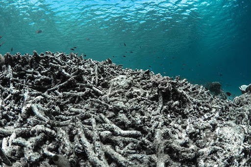
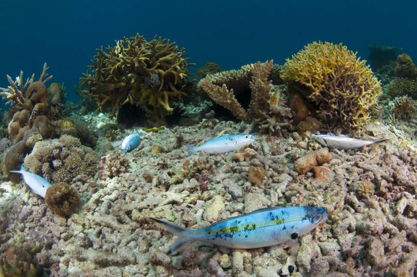

Dynamite Fishing

Dynamite fishing (homemade bomb) is set off under water to kill fish for easy collection. The dead fish floating to the surface are then simply scooped up. The explosives used destroy the marine environment, leaving it devoid of life. Dynamite fishing has contributed to massive destruction of Southeast Asian coral reefs over the past 20 years. Large blasted areas are very slow to recover because corals have difficulty establishing on loose or sandy substrate. Scientific studies showed that reef can take more than a century to recover once the live coral cover has been destroyed. Dynamite fishing is one of the most pervasive fishing techniques and it is banned by most countries.
Impacts

- Direct overexploitation of fish, invertebrates, and algae for food and the aquarium trade
- Removal of a species or group of species impacting multiple trophic levels
- By-catch and mortality of non-target species
- Changes from coral to algal dominance due to reduction in herbivores
- Physical impacts to reef environments associated with fishing techniques, fishing gear, and anchoring of fishing vessels
Such impacts are exacerbated when combined with other coral reef threats such as climate change, coral disease, and land-based sources of pollution. A number of management strategies to address overfishing and destructive fishing have been identified including the establishment of no-take areas within MPAs, seasonal closures to protect breeding sites, restrictions on number of people allowed to fish, types of fishing gear used, and the quantities or sizes of fish that can be harvested. Read more about reef fisheries.